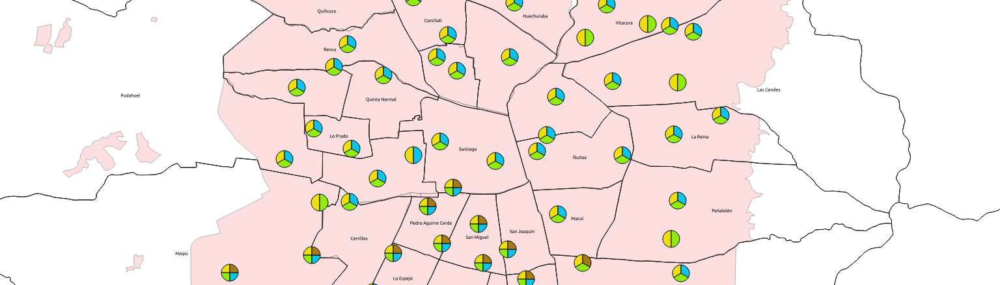

Introducción a los SIG y al análisis espacial

Obra publicada con
Licencia Creative Commons Reconocimiento Compartir igual 4.0
LAB. DE GEO-INFORMACIÓN Y PERCEPCIÓN REMOTA | PONTIFICIA UNIVERSIDAD CATÓLICA DE VALPARAÍSO